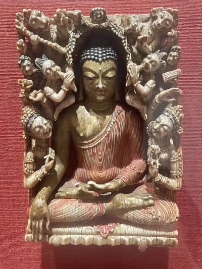
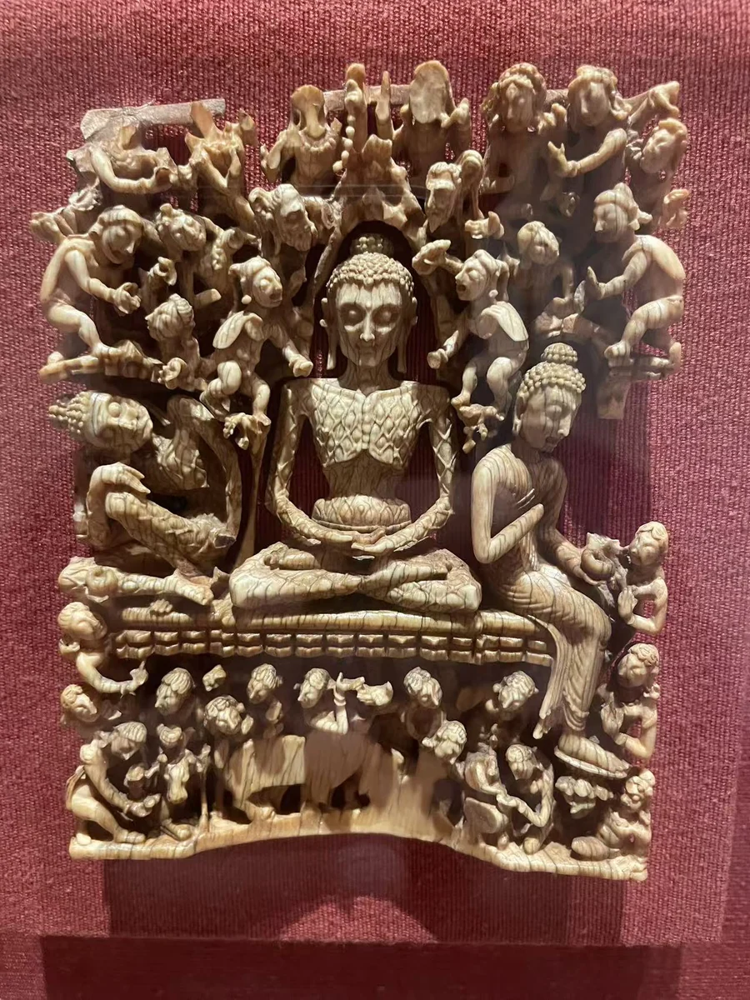
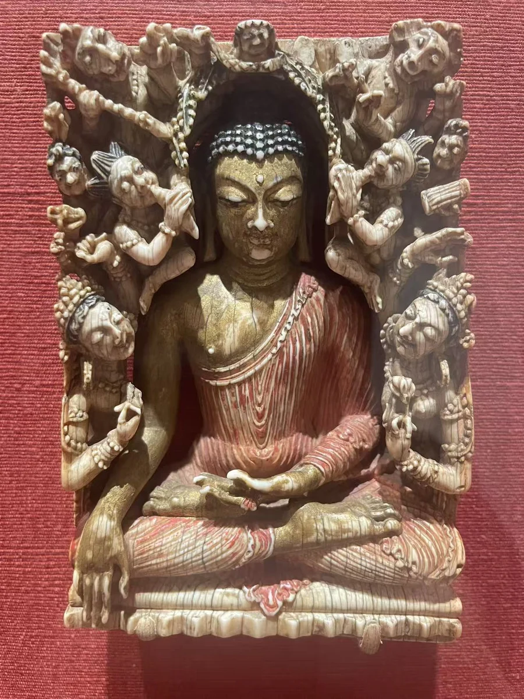

克什米尔象牙魔军扰佛龛
克利夫兰美术馆
03 / CLOSE LOOKING

这两件克什米尔象牙作品只有十余厘米高，佛传却在极小的空间中展开。苦修佛的肋骨、血管，与魔军扰佛中簇拥而来的身体，形成强烈对照。观看时可以先缩回实物尺度，再逐步放大：精微并不只在雕工，也在这些人物如何围绕一个安定的中心组织起来。 [11] [12]
细看：苦修身体与两侧场景；象牙透雕的空隙；残存的金与彩。

克利夫兰美术馆
图片按各自比例展示，实物不等大。

象牙，残留金彩
[12]作品基本资料据现场展签及下列馆方记录整理；文字中的观看描述基于这里的现场照片。